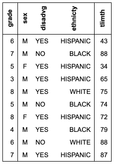
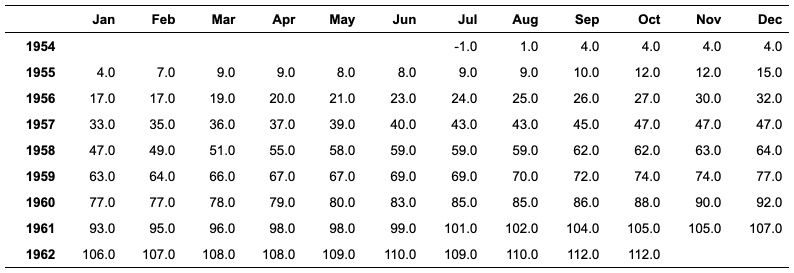

| as_flextable.xtable {flextable} | R Documentation |
Get a flextable object from
a xtable object.
xtable_to_flextable will be deprecated in favor of as_flextable.xtable.
## S3 method for class 'xtable'
as_flextable(
x,
text.properties = fp_text_default(),
format.args = getOption("xtable.format.args", NULL),
rowname_col = "rowname",
hline.after = getOption("xtable.hline.after", c(-1, 0, nrow(x))),
NA.string = getOption("xtable.NA.string", ""),
include.rownames = TRUE,
rotate.colnames = getOption("xtable.rotate.colnames", FALSE),
...
)
xtable_to_flextable(
x,
text.properties = fp_text_default(),
format.args = getOption("xtable.format.args", NULL),
rowname_col = "rowname",
hline.after = getOption("xtable.hline.after", c(-1, 0, nrow(x))),
NA.string = getOption("xtable.NA.string", ""),
include.rownames = TRUE,
rotate.colnames = getOption("xtable.rotate.colnames", FALSE),
...
)
x |
|
text.properties |
default text formatting properties |
format.args |
List of arguments for the formatC function.
See argument |
rowname_col |
colname used for row names column |
hline.after |
see |
NA.string |
see |
include.rownames |
see |
rotate.colnames |
see |
... |
unused arguments |


Other as_flextable methods:
as_flextable.gam(),
as_flextable.glm(),
as_flextable.grouped_data(),
as_flextable.htest(),
as_flextable.lm(),
as_flextable()
library(officer)
if( require("xtable") ){
data(tli)
tli.table <- xtable(tli[1:10, ])
align(tli.table) <- rep("r", 6)
align(tli.table) <- "|r|r|clr|r|"
ft_1 <- as_flextable(
tli.table,
rotate.colnames = TRUE,
include.rownames = FALSE)
ft_1 <- height(ft_1, i = 1, part = "header", height = 1)
ft_1
Grade3 <- c("A","B","B","A","B","C","C","D","A","B",
"C","C","C","D","B","B","D","C","C","D")
Grade6 <- c("A","A","A","B","B","B","B","B","C","C",
"A","C","C","C","D","D","D","D","D","D")
Cohort <- table(Grade3, Grade6)
ft_2 <- as_flextable(xtable(Cohort))
ft_2 <- set_header_labels(ft_2, rowname = "Grade 3")
ft_2 <- autofit(ft_2)
ft_2 <- add_header(ft_2, A = "Grade 6")
ft_2 <- merge_at(ft_2, i = 1, j = seq_len( ncol(Cohort) ) + 1,
part = "header" )
ft_2 <- bold(ft_2, j = 1, bold = TRUE, part = "body")
ft_2 <- height_all(ft_2, part = "header", height = .4)
ft_2
temp.ts <- ts(cumsum(1 + round(rnorm(100), 0)),
start = c(1954, 7), frequency = 12)
ft_3 <- as_flextable(x = xtable(temp.ts, digits = 0),
NA.string = "-")
ft_3
detach("package:xtable", unload = TRUE)
}